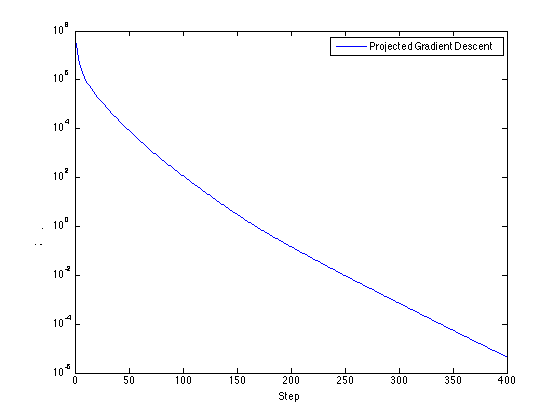

Contents
Leukemia
global lambda A rng(123); cvx_solver mosek; leukemia = load('./matlab_data/leukemia_train_and_test.mat'); A = leukemia.leukemia_train_data; n_train = size(A, 1); A = sparse([A ones(n_train, 1)]); B = leukemia.leukemia_test_data; n_test = size(B, 1); B = sparse([B ones(n_test, 1)]); y_train = leukemia.leukemia_train_label; A = sparse(diag(y_train)) * sparse(A); y_test = leukemia.leukemia_test_label;
CVX
min 1/2 * A' * alpha^2_2 - lambda * (all_ones' * alpha)
lambda = 1.0;
all_ones = ones(n_train, 1);
cvx_begin
variables alpha(n_train, 1)
minimize 1/2 * sum_square(A' * alpha) - lambda * (all_ones' * alpha)
subject to
0 <= alpha <= all_ones;
cvx_end
w = A' * alpha;
predicted = B * w;
full_score = evaluate_classification(predicted, y_test);
disp(full_score)
alpha_cvx = alpha;
Calling Mosek 7.0.0.75: 7208 variables, 7169 equality constraints
------------------------------------------------------------
MOSEK Version 7.0.0.75 (Build date: 2013-7-1 22:38:42)
Copyright (c) 1998-2013 MOSEK ApS, Denmark. WWW: http://mosek.com
Computer
Platform : MACOSX/64-X86
Cores : 8
Problem
Name :
Objective sense : min
Type : CONIC (conic optimization problem)
Constraints : 7169
Cones : 1
Scalar variables : 7208
Matrix variables : 0
Integer variables : 0
Optimizer started.
Conic interior-point optimizer started.
Presolve started.
Linear dependency checker started.
Linear dependency checker terminated.
Eliminator - tries : 0 time : 0.00
Eliminator - elim's : 0
Lin. dep. - tries : 1 time : 0.01
Lin. dep. - number : 0
Presolve terminated. Time: 0.05
Optimizer - threads : 8
Optimizer - solved problem : the primal
Optimizer - Constraints : 7131
Optimizer - Cones : 1
Optimizer - Scalar variables : 7170 conic : 7132
Optimizer - Semi-definite variables: 0 scalarized : 0
Factor - setup time : 0.02 dense det. time : 0.00
Factor - ML order time : 0.00 GP order time : 0.00
Factor - nonzeros before factor : 2.85e+05 after factor : 2.86e+05
Factor - dense dim. : 40 flops : 1.29e+07
ITE PFEAS DFEAS GFEAS PRSTATUS POBJ DOBJ MU TIME
0 1.6e+01 2.0e+00 3.6e+01 0.00e+00 -3.750000000e+01 0.000000000e+00 1.0e+00 0.10
1 8.0e-01 1.0e-01 1.8e+00 1.00e+00 -1.883875997e+00 -3.759317918e-04 5.0e-02 0.13
2 4.4e-02 5.5e-03 1.0e-01 1.01e+00 -1.023893505e-01 -5.188676780e-04 2.7e-03 0.15
3 9.4e-03 1.2e-03 2.2e-02 1.15e+00 -2.132232254e-02 -1.669205656e-03 5.9e-04 0.16
4 5.0e-03 6.2e-04 1.1e-02 1.32e+00 -1.137934439e-02 -2.254846722e-03 3.1e-04 0.18
5 2.4e-03 3.0e-04 5.5e-03 1.29e+00 -6.335356796e-03 -2.432209080e-03 1.5e-04 0.20
6 8.5e-04 1.1e-04 1.9e-03 1.24e+00 -3.680339055e-03 -2.443549456e-03 5.3e-05 0.22
7 1.9e-04 2.3e-05 4.3e-04 1.16e+00 -2.679462869e-03 -2.428656524e-03 1.2e-05 0.23
8 4.0e-05 5.0e-06 9.1e-05 1.05e+00 -2.477802299e-03 -2.425464506e-03 2.5e-06 0.25
9 8.2e-06 1.0e-06 1.9e-05 1.02e+00 -2.435535360e-03 -2.424844375e-03 5.1e-07 0.27
10 9.9e-07 1.2e-07 2.3e-06 1.00e+00 -2.425983642e-03 -2.424702531e-03 6.2e-08 0.28
11 5.6e-08 7.0e-09 1.3e-07 1.00e+00 -2.424751651e-03 -2.424678955e-03 3.5e-09 0.30
12 7.6e-10 9.5e-11 1.7e-09 1.00e+00 -2.424678479e-03 -2.424677496e-03 4.7e-11 0.32
Interior-point optimizer terminated. Time: 0.32.
Optimizer terminated. Time: 0.35
Interior-point solution summary
Problem status : PRIMAL_AND_DUAL_FEASIBLE
Solution status : OPTIMAL
Primal. obj: -2.4246784790e-03 Viol. con: 8e-10 var: 0e+00 cones: 0e+00
Dual. obj: -2.4246774958e-03 Viol. con: 0e+00 var: 1e-11 cones: 0e+00
Optimizer summary
Optimizer - time: 0.35
Interior-point - iterations : 12 time: 0.32
Basis identification - time: 0.00
Primal - iterations : 0 time: 0.00
Dual - iterations : 0 time: 0.00
Clean primal - iterations : 0 time: 0.00
Clean dual - iterations : 0 time: 0.00
Clean primal-dual - iterations : 0 time: 0.00
Simplex - time: 0.00
Primal simplex - iterations : 0 time: 0.00
Dual simplex - iterations : 0 time: 0.00
Primal-dual simplex - iterations : 0 time: 0.00
Mixed integer - relaxations: 0 time: 0.00
------------------------------------------------------------
Status: Solved
Optimal value (cvx_optval): -0.00242468
truePositive: 13
trueNegative: 14
falsePositive: 0
falseNegative: 7
accuracy: 0.7941
precision: 1
recall: 0.6500
f1: 0.7879
Fmincon
lambda = 1.0; all_ones = ones(n_train, 1); options = optimoptions('fmincon','Algorithm','active-set','GradObj','on','Display','iter'); options.MaxFunEvals = 1e9; alpha0 = 0.5 * all_ones; [alpha,fval,exitflag,output] = fmincon(@svm_qp, alpha0, [], [], [], [], zeros(size(all_ones)), all_ones, [], options); w = A' * alpha; predicted = B * w; full_score = evaluate_classification(predicted, y_test); disp(full_score) alpha_fmincon = alpha;
Max Line search Directional First-order
Iter F-count f(x) constraint steplength derivative optimality Procedure
0 1 72018.8 -0.5
1 3 10089.7 0 1 -4.82e+04 3.59e+04
2 6 3592.08 0 0.5 -1.54e+04 9.25e+03
3 12 3494.86 0 0.0625 -2.64e+03 4.36e+03
4 17 3020.29 0 0.125 -3.95e+03 3.13e+03
5 19 238.924 2.082e-17 1 -5.72e+03 5.37e+03
6 24 254.198 1.735e-17 0.125 -636 1.28e+03
7 26 26578.2 1.214e-17 1 -624 1.36e+04
8 28 3354.85 1.214e-17 1 -2e+04 4.7e+03
9 30 14278 0 1 -3.84e+03 9.95e+03
10 33 9312.42 0 0.5 -8.33e+03 5.23e+03
11 35 6996.88 0 1 -9.01e+03 8.88e+03
12 38 3346.12 0 0.5 -7.49e+03 7.28e+03
13 43 3160.61 0 0.125 -2.97e+03 3.29e+03
14 45 1102.31 1.388e-17 1 -5.28e+03 5.07e+03
15 47 719.862 0 1 -3.21e+03 3.11e+03
16 52 701.088 0 0.125 -793 2.19e+03
17 56 658.421 0 0.25 -2.14e+03 2.02e+03
18 58 196.266 0 1 -2.19e+03 1.56e+03
19 61 133.77 0 0.5 -807 708
20 67 125.291 0 0.0625 -374 492
21 69 103.72 1.388e-17 1 -757 1.04e+03
22 71 129.616 0 1 -773 1.15e+03
23 76 123.429 0 0.125 -380 928
24 82 108.88 0 0.0625 -376 324
25 84 103.364 3.469e-18 1 -668 906
26 86 30.3269 0 1 -859 670
27 93 28.724 0 0.0312 -137 535
28 97 22.2847 0 0.25 -329 241
29 100 19.5024 1.735e-18 0.5 -250 450
30 102 0.514223 2.168e-19 1 -444 218
31 105 0.290185 1.084e-19 0.5 -54.9 84.6
32 108 2.3152 0 0.5 -18 119
33 110 1.20375 0 1 -126 146
34 113 0.91148 0 0.5 -81.1 76.7
35 116 0.694746 2.168e-19 0.5 -48.2 58.4
36 119 2.64404 1.084e-19 0.5 -39.3 167
37 121 0.0252533 0 1 -196 38.4
38 128 0.0149131 3.388e-21 0.0312 -10.2 13.1
39 130 0.0569404 0 1 -6.96 15.2
40 132 0.0415029 2.168e-19 1 -15.3 20
41 134 0.125214 1.355e-20 1 -16.5 34.4
42 136 0.00900694 0 1 -34.4 8.78
43 141 0.00757833 0 0.125 -4.33 4.25
44 144 0.00444765 0 0.5 -7.14 6.77
45 146 0.000894925 0 1 -6.39 4.48
46 152 0.000533151 0 0.0625 -1.82 4.93
47 159 -8.02877e-05 2.647e-23 0.0312 -2.21 2.64
48 164 -0.000446192 0 0.125 -1.88 1.82
49 168 -0.000643865 0 0.25 -1.56 2.55
50 171 -0.00164395 0 0.5 -2.76 1.98
51 175 -0.00181571 0 0.25 -1.22 1.28
52 180 -0.00182855 0 0.125 -0.826 0.964
53 184 -0.00198045 0 0.25 -1.12 1.26
54 188 -0.00216269 0 0.25 -1.28 1.03
55 192 -0.00223119 0 0.25 -0.752 0.836
56 196 -0.00232559 0 0.25 -0.913 0.675
57 201 -0.00234165 0 0.125 -0.457 0.63
58 206 -0.0023693 0 0.125 -0.463 0.404
59 212 -0.0023853 0 0.0625 -0.392 0.269
60 218 -0.00239326 0 0.0625 -0.253 0.287
61 224 -0.00240017 0 0.0625 -0.205 0.185
62 229 -0.00240572 0 0.125 -0.224 0.227
63 234 -0.00240992 0 0.125 -0.205 0.378
64 239 -0.00241309 0 0.125 -0.223 0.349
65 245 -0.00241581 0 0.0625 -0.136 0.216
66 251 -0.00241773 0 0.0625 -0.116 0.245
67 257 -0.00242084 0 0.0625 -0.154 0.19
68 264 -0.00242198 0 0.0312 -0.0973 0.0888
69 271 -0.00242217 0 0.0312 -0.0463 0.158
70 277 -0.00242217 0 0.0625 -0.0487 0.0862
71 283 -0.00242271 0 0.0625 -0.0669 0.0848 Hessian modified
Local minimum possible. Constraints satisfied.
fmincon stopped because the predicted change in the objective function
is less than the default value of the function tolerance and constraints
are satisfied to within the default value of the constraint tolerance.
Active inequalities (to within options.TolCon = 1e-06):
lower upper ineqlin ineqnonlin
15
30
33
34
36
37
truePositive: 13
trueNegative: 14
falsePositive: 0
falseNegative: 7
accuracy: 0.7941
precision: 1
recall: 0.6500
f1: 0.7879
Projected Gradient Descent
alpha = 0.5 * all_ones; L = svds(A, 1)^2; step_size = 1/L; stats = []; for cur_step = 1 : 400 [f, g] = svm_qp(alpha); next = alpha - step_size * g; alpha = proj_unit_box(next); stats = [stats; struct('step', cur_step, 'alpha', alpha, 'f', f, 'scale_f', (f - cvx_optval) / abs(fval))]; end projected_gradient_descent_stats = stats; plot_data = []; for i = 1 : size(stats, 1) plot_data = [plot_data; stats(i).step, stats(i).scale_f]; end semilogy(plot_data(:, 1), plot_data(:, 2)); w = A' * alpha; predicted = B * w; full_score = evaluate_classification(predicted, y_test); disp(full_score) alpha_fmincon = alpha;
truePositive: 13
trueNegative: 14
falsePositive: 0
falseNegative: 7
accuracy: 0.7941
precision: 1
recall: 0.6500
f1: 0.7879
